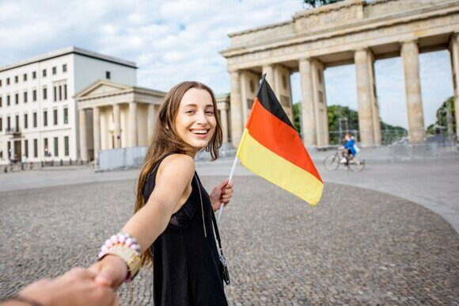

« НазадГотовимся к поездке в Германию в 2025: Обновлённые визовые правила и новые процедуры оформления для российских путешественников В последние годы мир стал свидетелем динамичных изменений как на глобальном, так и на локальном уровнях, что отражается и на миграционных процессах. Германия, являясь ведущей экономикой Европы и одним из самых популярных направлений для путешественников и бизнесменов, обновляет свои визовые и миграционные правила. Новые требования для въезда, вступающие в силу в 2025 году, нацелены на повышение контроля и безопасности, а также соответствуют соглашениям Европейского Союза и современным санитарно-эпидемиологическим нормам. Среди основных причин введения нововведений можно выделить следующие моменты: Геополитическая ситуация: изменившаяся мировая обстановка и усиление мер противодействия потенциальным угрозам приводят к ужесточению контроля за въездом в страны ЕС. Обновлённые требования ЕС: в свете развития партнерских отношений внутри Европейского Союза обновляются правила въезда для иностранных граждан с целью обеспечения единства стандартов безопасности, регулирования миграционных потоков и поддержания законности. Обновленные требования для получения визыВ последнее время многие задаются вопросом: закрыла ли Германия полностью свои границы для россиян? Несмотря на существенное ужесточение визовых процедур, информация о полном запрете на въезд является мифом. Вместо этого действуют новые, более строгие правила, усложняющие почти каждый этап оформления документов и проверки на границе. В 2025 году Германия вводит ряд изменений в систему выдачи виз, в том числе для россиян. Ниже рассмотрены ключевые моменты, которыми ознакомятся все, кто планирует въезд в страну. Общие измененияС начала 2025 года для россиян, въезжающих в Германию, отменяются возможности получения многократных виз. Теперь выдаются в основном одноразовые визы, что требует от заявителей более тщательной подготовки каждого отдельного обращения. Такая мера направлена на усиление контроля за миграционными потоками, уменьшение риска нелегальных миграционных процессов и приведение визовой политики в соответствие с обновленными нормами ЕС. Основные изменения включают: Отказ от многократных въездов: получение одноразовой визы требует от туристов или деловых путешественников постоянного обновления документов при каждом новом въезде, что влияет на планирование поездок. Усиление контроля на границе: новые правила предусматривают более строгую процедуру контроля при пересечении границы, что связано как с мерами безопасности, так и с санитарно-эпидемиологическими нормами. Электронная анкета и запись в визовый центрОдним из ключевых изменений стало использование онлайн-сервиса для заполнения анкеты. Теперь все заявители обязаны пройти процедуру на сайте videx.diplo.de, где указываются все необходимые данные для оформления визы. При заполнении анкеты важно обратить внимание на следующие моменты: Точность введённых данных: любая ошибка в анкете может привести к задержке рассмотрения заявления или даже отказу в выдаче визы. Выбор пункта подачи документов: заявителю необходимо внимательно выбрать региональный визовый центр. Например, если обращаться через Москву, документы могут быть пересланы в другие регионы, что требует учета сроков и логистических особенностей. Заблаговременная запись: записи в визовый центр могут заполняться быстро, особенно в популярных регионах. Поэтому рекомендуется начать оформление за несколько месяцев до планируемой поездки. Перечень необходимых документовДля успешного получения визы важно правильно собрать весь пакет документов. Новые требования предусматривают следующий перечень: Заграничный паспорт: паспорт должен быть действителен минимум три месяца после предполагаемой даты выезда из Германии. Анкета: распечатанная и подписанная анкета, заполненная онлайн. Для несовершеннолетних требуется наличие родительской подписи и нотариально заверенного согласия на выезд. Медицинская страховка: страховка должна покрывать минимальную сумму в 30 000 € и соответствовать европейским стандартам медицинского обслуживания. Банковская выписка: требуется выписка из банка, желательно из структуры, расположенной в ЕС, или из страны, не подверженной санкционным ограничениям. Подтверждение трудоустройства и намерения вернуться: это могут быть документы, подтверждающие ваше место работы, свидетельства о собственности или другие справки, гарантирующие намерение соблюдения визового режима. Дополнительные документы: копии предыдущих шенгенских виз, внутренний паспорт и иные бумаги, которые могут потребоваться в зависимости от конкретной ситуации заявителя. Фотографии формата 3,5х4,5 матовые, цветные, без овалов и без углов 2 штучки. Биометрия и сборыЕще одним важным этапом оформления визы является прохождение биометрической процедуры: Процедура снятия биометрических данных: заявителю требуется предоставить цифровую фотографию, а также пройти процедуру снятия отпечатков пальцев. Это стандартная мера, принятая во всех странах ЕС. Консульские и сервисные сборы: нововведения предусматривают фиксированные размеры сборов, которые подлежат оплате как наличными (в рублях), так и с использованием международных кредитных карт. Организация записи на приём: запись в визовый центр происходит заранее через интернет, где также можно получить информацию о суммах сборов и режиме работы центра. Все перечисленные требования направлены на повышение контроля над процессом выдачи виз, снижение риска мошенничества и оптимизацию выдачи документов, что в конечном итоге должно способствовать более безопасному и предсказуемому потоку иностранных граждан. Особенности транспортировки домашних животныхПри обновлении требований для въезда в Германию особое внимание уделено вопросам перевозки домашних животных. Новые правила касаются не только собак и кошек, но и других домашних питомцев, а также предусматривают специальные санитарно-эпидемиологические меры. Общие положенияСовременные меры безопасности требуют обязательного соблюдения ряда процедур, направленных на защиту от потенциальных зоологических опасностей, таких как бешенство и другие инфекционные заболевания. Основные моменты включают: Обязательная вакцинация: все животные должны пройти вакцинацию против бешенства, при этом необходимо предъявить документальное подтверждение о вакцинации с указанием даты и срока действия щепления. Единый ветеринарный стандарт ЕС: все справки и медицинские документы должны оформляться в строгом соответствии с требованиями Европейского Союза, чтобы избежать отказа при въезде. Санитарная обработка: путешественникам могут потребоваться дополнительные меры для подтверждения отсутствия инфекционных заболеваний, что отражается в требованиях к подготовке документов. Требования для собак, кошек и хорьковДля наиболее популярных видов домашних животных введены детальные рекомендации, позволяющие снизить риск отказа при обнаружении нарушений. В перечень основных мер входят: Микрочип или татуировка: животные, прибывающие в Германию, должны иметь идентификационный микрочип. Для особых категорий питомцев, рождённых до определённой даты, допускается идентификация посредством татуировки. Подтверждение вакцинации: необходимо предоставить справку о вакцинации против бешенства с указанием сроков действия вакцинации. Тест на определение титра антител: введён новый тест, который должен быть сдан не ранее, чем за 30 дней после вакцинации и не менее чем за 3 месяца до поездки. Минимальный титр должен составлять 0.5 МЕ/мл, что гарантирует достаточную защиту животного от возможных инфекций. Правила для щенков: для щенков существуют дополнительные требования, такие как минимальный возраст для пересечения границы и обязательное подтверждение формирования иммунитета перед поездкой. Сопровождение: сопровождающее лицо должно предоставить письменное заявление с подтверждением некоммерческого характера перевозки питомца, что позволяет избежать подозрений в перевозке животных в торговых целях. Требования для перевозки птицПтицы также попадают под действие новых ветеринарно-санитарных норм, и правила для них представлены следующим образом: Карантинные меры для невакцинированных птиц: если птица не прошла вакцинацию или не имеет достаточного количества прививок, ей может быть назначен карантин в Германии. Длительность карантина зависит от риска заболевания и результатов медицинского обследования. Альтернативный вариант – карантин в стране назначения: в некоторых случаях допускается проведение карантина не на территории Германии, а в специально оборудованных центрах в стране назначения. Для привитых птиц: необходимо предоставить полную документацию, подтверждающую вакцинацию с соблюдением всех временных рамок и минимального количества прививок, необходимых для безопасности как животного, так и окружающих. Особенности ввоза остальных видов животныхНе только крупные домашние питомцы подлежат строгому контролю. Правила распространяются и на мелких домашних животных: Кролики, хомяки, морские свинки: данные виды животных подлежат отдельному перечню требований. Ограничения могут касаться количества одновременно ввозимых питомцев, а также оформления разрешительных документов, если ввоз осуществляется с целью коммерческой торговли. Подтверждение ветеринарного осмотра: владельцам рекомендуется заранее проводить ветеринарный осмотр и собирать все необходимые медицинские справки, чтобы предотвратить возникновение проблем на границе. Таким образом, новые требования к перевозке домашних животных в Германии нацелены на обеспечение безопасности и санитарного контроля. Владельцам рекомендуется тщательно подготовиться к поездке, связаться с ветеринарными специалистами и проверить актуальность всех документов согласно требованиям ЕС. Правила транзита через ГерманиюНовые визовые и миграционные правила охватывают не только прямой въезд в страну, но и транзит через её территорию. Это особенно важно для пассажиров, которые планируют пересадки в крупных аэропортах Германии. Транзитные правила в аэропортахПри пересадке или кратковременном пребывании в транзитной зоне аэропортов Германии вводятся следующие правила: Различие между трансфером и транзитом с паспортным контролем:
Список аэропортов, где действует транзит без виз:
Ограничения по времени:
Такие меры позволяют обеспечить негосударственному контролю части международного сообщения, при этом контроль остаётся строго на уровне санитарных и миграционных требований ЕС. Путешественникам важно знать, что даже в случае транзита необходимо иметь при себе паспорт, подтверждение брони следующего рейса и необходимые документы, если они планируют выйти из транзитной зоны. Дополнительные аспекты визовой политики и практические советыНовые визовые правила для въезда в Германию из России сопровождаются рядом дополнительных аспектов, которые следует учитывать при подготовке документов и планировании поездки. Ниже рассмотрены основные моменты, связанные с платёжными нюансами, сроками подачи документов и рекомендациями. Вопросы, связанные с санкционными ограничениямиВ текущей геополитической ситуации многие изменения затрагивают и финансовую сферу, чему соответствуют и новые требования для получения виз. Среди основных трендов можно выделить: Ограничения на использование российских банковских карт:
Условия оплаты консульских сборов:
Сроки подачи документов и рассмотрение заявленийПравильное планирование подачи документов помогает избежать задержек и непредвиденных ситуаций: Сроки рассмотрения заявлений:
Подготовка пакета документов:
Рекомендации по подготовке документовЧтобы сделать процесс подготовки документов максимально удобным и безошибочным, следуйте следующим рекомендациям: Проверка актуальности информации: Перед подачей документов стоит посетить официальные сайты посольств Германии, а также порталы, где размещаются обновлённые требования и новости визовой политики. Консультация с экспертами: Если у вас возникают вопросы по подтверждению трудоустройства, оформлению документов для несовершеннолетних или другим специфическим нюансам, рекомендуется обратиться за консультацией к юристу или специалисту по миграционным вопросам. Документальное подтверждение: Соберите все подтверждающие документы: справки с места работы, документы о праве собственности, банковские выписки и прочее. Это поможет вам доказать намерение вернуться в Россию после завершения поездки. Бдительность при заполнении анкеты: При онлайн-подаче заявления внимательно проверяйте все введённые данные. Любая ошибка может привести к задержке или провалу в получении визы. Эффективное выполнение всех вышеперечисленных рекомендаций позволит значительно снизить риск отказа в визе, минимизировать возможные задержки и сделать процесс подготовки к поездке максимально прозрачным и понятным. Практические советы для минимизации рисковМониторинг официальной информации: Настоятельно рекомендуется регулярно просматривать новости и обновления на официальных порталах посольств Германии, чтобы своевременно узнавать о возможных изменениях в требованиях. Ранняя подготовка: Подавать документы нужно заблаговременно, чтобы иметь возможность уладить все спорные моменты и собрать полный пакет требуемых документов. Консультации с экспертами: Если возникают вопросы по специфике оформления виз для несовершеннолетних или по перевозке домашних животных, стоит обращаться за консультацией к юристам и специалистам, которые имеют практический опыт работы с миграционными вопросами. Планирование транзита: Если ваш рейс включает пересадку в одном из крупнейших аэропортов Германии, заранее уточните, требуется ли оформление визы для транзита, и ознакомьтесь с правилами пребывания в транзитной зоне, чтобы избежать конфликтов с миграционными службами. Несмотря на кажущуюся сложность новых требований, правильное планирование и подготовка значительно упрощают процесс получения визы и помогут минимизировать стресс, связанный с пересечением границы. Важно помнить, что каждая деталь имеет значение – от точности заполнения анкеты до правильного оформления медицинской страховки. Такой комплексный подход гарантирует успешное прохождение всех этапов проверки и позволяет насладиться поездкой, не отвлекаясь на бюрократические сложности. Часто задаваемые вопросы (FAQ)1. Что делать, если срок действия паспорта меньше трёх месяцев после планируемой даты выезда? Рекомендуется заблаговременно обновить загранпаспорт, так как действительность нового документа является обязательным требованием для получения визы. 2. Можно ли использовать российскую банковскую карту для оплаты консульских сборов? Из-за санкционных ограничений многие российские банки могут не поддерживать международные транзакции, поэтому рекомендуется заранее оформить карту, выданную банком, не подверженным ограничениям, или подготовить наличные в евро. 3. Каким образом проводится тест на титр антител у животных? Тест осуществляется в специализированных ветеринарных клиниках и требует соблюдения временных рамок: не ранее 30 дней после вакцинации и не менее чем за 3 месяца до поездки. Минимальный титр должен составлять 0.5 МЕ/мл. 4. Каковы правила транзита в аэропортах Германии? Если вы не планируете покидать транзитную зону, визовые требования могут не применяться. Однако при пересадке с выходом из транзитной зоны необходимо оформлять визу, как для обычного въезда. 5. Какие документы потребуются для подтверждения намерения вернуться в Россию? Это могут быть справки с места работы, документы о праве собственности или другие юридически значимые бумаги, свидетельствующие о ваших тесных связях с Россией. Введение новых требований для въезда в Германию из России является ответом на современные вызовы в области безопасности, санитарии и миграционной политики. Эти меры преследуют цель усилить контроль над потоками иностранных граждан, снизить риски нелегальной миграции и обеспечить единый стандарт безопасности для всех прибывающих. Для большинства заявителей основные изменения означают необходимость более тщательной подготовки:
ЗаключениеНововведения, вступающие в силу с 2025 года, представляют собой комплекс мер, направленных на усиление контроля за въездом иностранных граждан в Германию. Основные изменения касаются следующих аспектов: Визовые требования: Отказ от возможности оформления многократных виз и переход на выдачу однократных. Необходимость прохождения электронной анкеты, точного выбора пункта подачи документов через платформу videx.diplo.de и подготовки набора обязательных документов. Транспортировка домашних животных: Введение новых требований по идентификации питомцев, подтверждению вакцинации, обязательному тестированию титра антител и соблюдению дополнительных санитарных мер для всех категорий домашних животных. Транзит через Германию: Чёткое разделение условий транзита без выхода из зоны и пересадки с выполнением паспортного контроля, а также ограничения по времени пребывания в транзитной зоне. Дополнительные аспекты визовой политики: Ограничения, связанные с использованием российских банковских продуктов, особенности оплаты консульских сборов, а также необходимость заблаговременной подачи документов. Эти изменения внесены с целью повышения уровня безопасности и соответствия требованиям Европейского Союза. Для большинства заявителей это означает необходимость более тщательной подготовки, дополнительных проверок и соблюдения всех новых норм и процедур. Автор данной статьи призывает всех, кто планирует поездку в Германию, постоянно следить за обновлениями на официальных сайтах посольств и визовых центров, а также консультироваться с профессиональными юристами и миграционными экспертами. Такая подготовка поможет избежать неожиданных проблем и обеспечит стабильное прохождение всех этапов оформления поездки. При пересадке в аэропортах Германии важно помнить, что правила транзита предусмотрены для разных категорий пассажиров – от тех, кто остаётся в транзитной зоне, до тех, кому необходимо пройти паспортный контроль. Это значит, что даже во время кратчайших остановок следует быть готовым к возможной проверке документов и соблюдению всех требований. Финальный совет для всех, кто планирует поездку – постоянный мониторинг официальной информации и консультация с экспертами. Мир быстро меняется, и изменение норм и правил происходит регулярно. Актуальная информация от официальных государственных учреждений поможет избежать неожиданностей и обеспечит спокойное и безопасное путешествие. В заключение можно отметить, что новые требования для въезда в Германию из России станут эффективным инструментом для контроля миграционных потоков и улучшения безопасности на границе. При правильном подходе и детальной подготовке все формальности будут выполнены, а поездка – максимально комфортной. Надеемся, что данная статья послужила полезным источником информации и поможет вам успешно пройти все этапы оформления документов для въезда в Германию в 2025 году. Помощь в срочном оформлении загранпаспорта для поездки в ГерманиюПланируете поездку в Германию и срочно нужен загранпаспорт? Наш паспортно-визовый центр «Север» поможет вам оформить документ в кратчайшие сроки! С более чем 25-летним опытом работы и расположением в самом центре Москвы, мы гарантируем профессионализм, оперативность и индивидуальный подход к каждому клиенту. Мы предлагаем:
Доверьтесь профессионалам, которым вы можете быть уверены! Звоните прямо сейчас по телефону +79255854195 и оформите загранпаспорт для вашей поездки в Германию быстро, удобно и надежно.
|
Комментарии
Комментариев пока нет